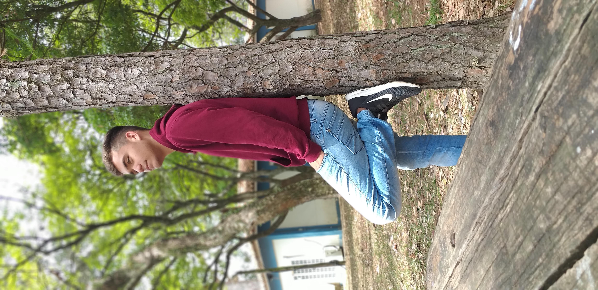
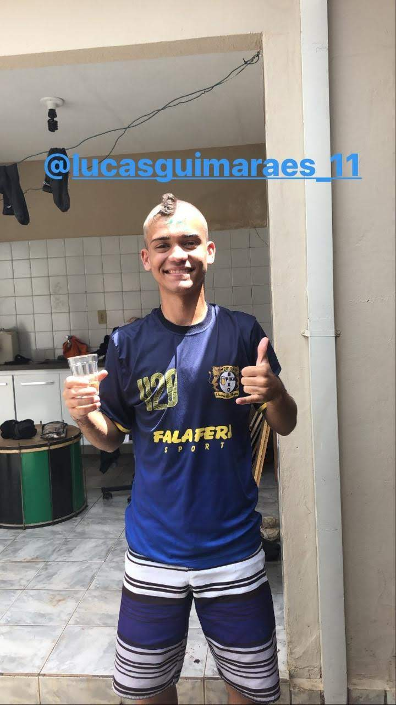

Lucas Guimarães
vulgo lukinhaSeja muito bem-vindo à pagina do membro Lukinha, um dos membros iniciais e principais do grupo Canarinho Pistola, responsável por ser o principal membro em destacar e alavancar o grupo para as mídias sociais, e também é o membro comunicador do grupo.
 Lukinha é responsável pelo destaque do grupo, sua beleza e característica de puxar a linha de frente nas situações do grupo, o ajudam a se destacar sua imagem, e destacar também o grupo.
Além disso, também é o atacante do time desse grupo, sendo como sendo uma de suas fortes características a velocidade, e dedicação em sempre buscar melhorar suas marcas pessoais.
"Fazer parte dos Canários sem duvida nenhuma foi a melhor coisa que eu fiz, esse grupo tem uma felicidade incrível, todos os dias são sempre bons, dia ruim não existe aqui; Esse grupo é forte, apesar das dificuldades, esse grupo sempre se manteve unido e alegre"
- Lucas Vinícius Guimarães
- Salto
- Solteiro
- Atacante
- Sport Scientists
Perguntado sobre uma palavra que define o grupo, Lukinha disse: "Felicidade 🤗" - o motivo é sempre que está com o grupo sente uma felicidade incrível e muito conforto, quando estão juntos, é um momento de maior felicidade para ele.